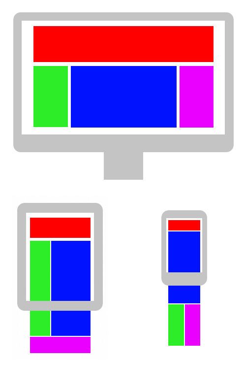
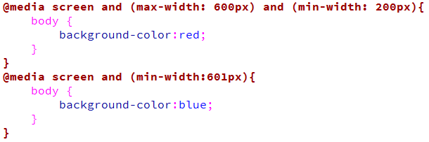
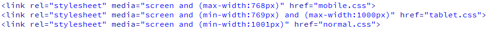
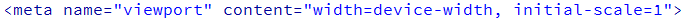
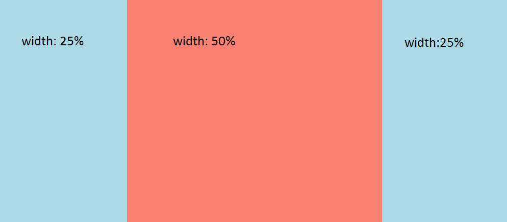

Responsive webdesign
Responsive webdesign is een benadering van webdesign waarbij de web developer streeft naar een optimale webervaring voor een breed scala aan apparaten (van desktop computerschermen tot mobiele telefoons). Het ontwerp van een responsive website schaalt mee met de afmetingen van een scherm, zonder in te leveren op leesbaarheid van tekst of bruikbaarheid van de gebruikersinterface.
Een voorbeeld van hoe verschillende elementen van een webpagina zich aanpassen aan de schermgrootte van verschillende apparaten zoals het beeldscherm van een desktopcomputer, een tablet en een smartphone.
Op http://mediaqueri.es/ worden wekelijk nieuwe sites geplaatst welke volgens deze site een goed mobiel dus responsive design hebben. Je ziet dus ook gelijk dat een designer tegenwoordig meerdere designs maakt voor één website.
| Opdracht 1: controleren |
| Ga naar http://mediaqueri.es/ en klik op 1 van de nieuwste sites. Verklein je browser en zie wat er met de site gebeurd. Het verkleinen van je browser doe je rechtsboven in naar het afsluiten van je browser. |
Media Queries
| Rule | |||||
|---|---|---|---|---|---|
| @media | 9 | 21 | 3.5 | 4.0 | 9 |
Om dat voor elkaar te krijgen gebruiken we media queries. In het kort komt het er op neer dat een query bestaat uit een bepaald media type en een aantal voorwaarden om zodoende specifiek bepaalde opmaak te kunnen toepassen. Dit wordt bijvoorbeeld gebruikt voor het maken van een responsive website waarbij ongedacht de afmetingen van een apparaat een website altijd goed getoond kan worden. Het gaat dan om voorwaardes die waar of niet waar zijn.
Op deze manier kun je dan een website aanpassen op basis van de breedte of hoogte van het venster, bijvoorbeeld handig als je een website optimaliseert voor mobiele telefoons en tablets. Je plaatst dan in het CSS bestand een voorwaarde waarmee je bijvoorbeeld aangeeft dat bepaalde opmaak toegepast moet worden als een venster kleiner is dan 600px maar groter dan 200px. Anders zal de opmaak niet worden toegepast.
Na @media gebruik je screen. Je kan hier nog veel meer mediatypes gebruiken maar wij gaan in deze cursus uit van screen. Dit is namelijk het standaardscherm.
| Voorbeeld 10-1 |
|  |
In het voorbeeld hierboven wordt de media querie toegepast die kijkt naar de breedte van het scherm. Als het scherm breder is dan 600px dan wordt de achtergrond blauw. Is het scherm minder breed dan 600px dan wordt de achtergrond rood.
| Opdracht 2: overtypen |
Maak een nieuwe HTML5 pagina aan.
|
Het toevoegen van media queries kan op twee manieren. Net zoals je gewend bent met gewoon css. Intern of extern. Wat je hierboven hebt gedaan is intern. Je maakt een standaard stylesheet aan en daarin ga je de media queries toevoegen. Een andere manier is om het extern aan te roepen. Op die manier maak je dus een stylesheet voor mobile, tablet en normaal. Dit is ook het meest overzichtelijk. Hieronder zie je een overzicht van drie extern aangeroepen css bestanden.
| Voorbeeld 10-2 |
|  |
| Opdracht 3: Extern css |
Maak een nieuwe HTML5 pagina aan.
|
De afstanden (breakpoints) zijn verschillend per apparaat. Deze zijn niet ergens vast gesteld. Het beste is om te kijken waar de breakpoints van jouw website liggen. Dit is namelijk voor elke site verschillend.
Viewport
Het is aan te raden om aan elke pagina die je maakt de regel van voorbeeld10-3 toe te voegen aan de <head> sectie van je pagina. Mobile telefoons hebben namelijk een viewport van ongeveer 320px. Echter zijn de technieken tegenwoordig zo goed dat ze wel meer dan 1000 pixels bevatten. Om dit nou op te lossen voeg je de viewport regel toe zodat je zeker weet dat een mobile gebruiker ook jouw mobile site te zien krijgt.
| Voorbeeld 10-3 |
|  |
max-width VS width
Voorheen gebruikte we altijd width om een breedte aan een divisie of afbeelding te koppelen. Vanaf nu gebruiken we max-width. Het verschil lijkt klein maar is vrij groot. Op het moment dat je iets een vaste breedte geeft (width) zal deze ook altijd deze grote aanhouden. Dit kan natuurlijk niet bij een responsive webdesign. Daarom gebruiken we max-width. Stel we geven een divisie een max-width van 600px. Dat betekend dat de divisie nooit groter wordt dan 600px, maar mocht het zo zijn dat de beschikbare ruimte minder is dan 600px dan past de divisie zich aan. Dus deze kan dan bijvoorbeeld ook 400px zijn. Voor afbeeldingen geldt exact hetzelfde. Die worden door de max-width ook schaalbaar.
| Opdracht 4: max-width |
Maak een nieuwe HTML5 pagina aan.
|
Als je dus zorgt dat bv je container een max-width heeft ipv een gewone width, dan schaalt die automatisch mee. De overige divisies kan je ook wel max-width geven maar dan worden ze zo breed als de content die erin staat. Pas daar dus voor op.
Procent % vs EM vs Pixels
Om het probleem van hierboven op te lossen gebruik je nu procenten. Kijk goed naar het voorbeeld hieronder.
| Voorbeeld 10-4 |
|  |
Je ziet een linker en rechter divisie met een breedte van 25% en een midden divisie van 50%. Let op dat je de hoogte nog wel in px blijft weergeven. Anders zie je de divisie namelijk niet als er geen content in staat.
| Opdracht 5: percentage |
Maak een nieuwe HTML5 pagina aan.
|
Om alles helemaal schaalbaar te maken gebruiken we nu em ipv pixels. 1 em = 16px. Als je dus een padding wilt van 10px neem je nu 10 / 16 = 0.625em. Dit kan verwarrend werken als je een breedte hebt van een aantal procenten. Helemaal als je de divisies hebt gemaakt zoals in opdracht 4. Waar gebruik je em dan wel voor? Voor font-size. Omdat em dus schaalbaar is, kan je heel gemakkelijk zeggen dat een lettertype bijvoorbeeld 2em is. Aan je mobile.css voeg je dan een font-size van 120% toe en je lettertype wordt automatisch groter.
| Opdracht 6: EM |
Open opdracht10-3.html.
|
We hebben nu een aantal nieuwe aspecten gezien van wat we wel en niet moeten gebruiken op mobile sites. Nu gaan we een bestaande site omzetten naar een responsive lay-out. Let er bij op dat dit niet moeilijk is maar wel voor elke website verschillend. Per site zal je per onderdeel moeten gaan bepalen hoe deze het beste weer gegeven kan worden op een mobile device. Klik hier voor de tutorial.